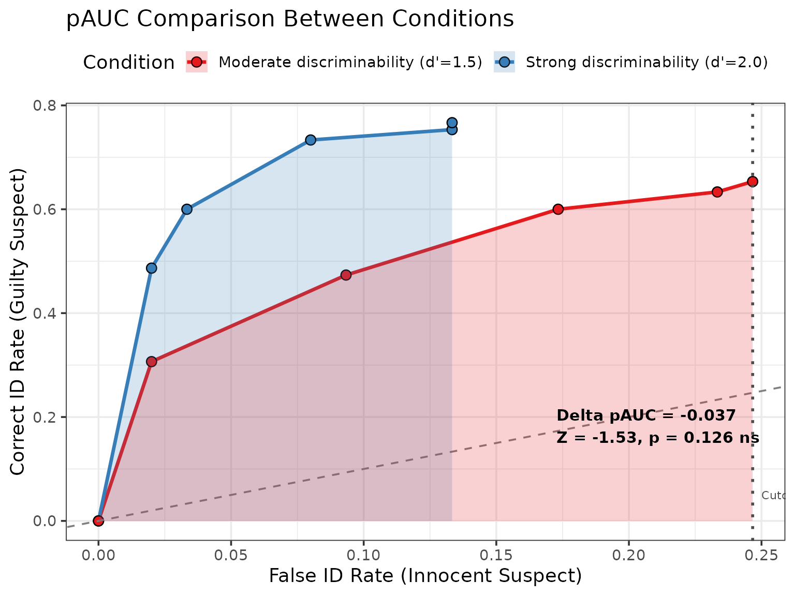
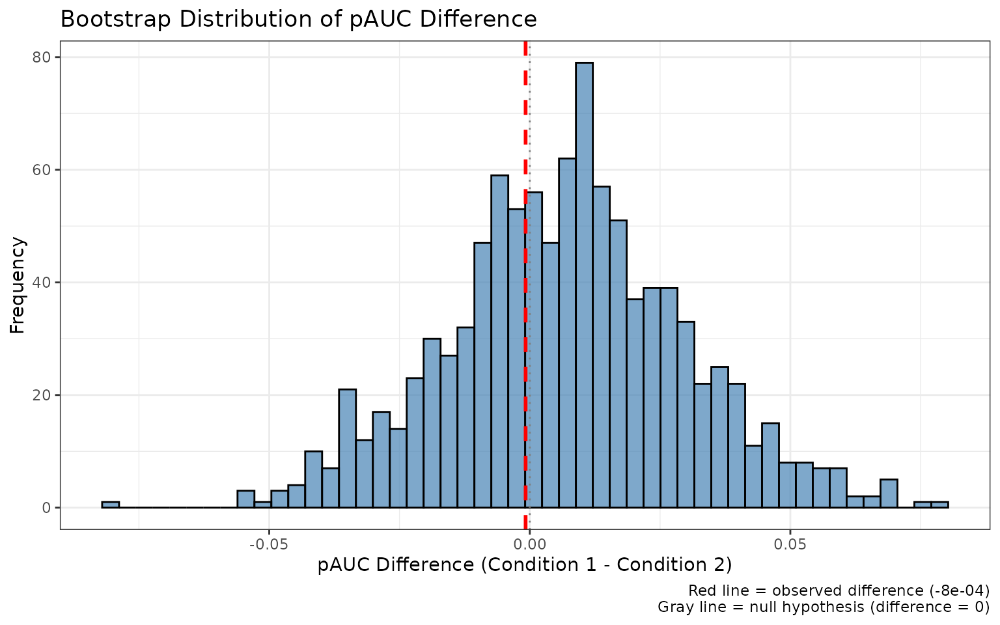

Statistical Comparison of ROC Curves (pAUC Analysis)
r4lineups package
2026-08-12
Source:vignettes/pauc_statistical_comparison.Rmd
pauc_statistical_comparison.RmdIntroduction
When evaluating eyewitness identification procedures, we often need to statistically compare ROC curves between conditions. For example:
- Do simultaneous lineups provide better discriminability than sequential lineups?
- Does increasing lineup size improve or impair performance?
- Do different retention intervals affect discriminability?
This vignette demonstrates how to use r4lineups’
compare_pauc() function to rigorously test for differences
in partial Area Under the Curve (pAUC) between conditions using
bootstrap-based standard errors and z-tests.
Statistical Framework
The Z-Test for pAUC Differences
The comparison uses the following statistical framework:
Test statistic:
Standard errors: - Computed via bootstrap resampling (non-parametric) - Typically 1000-2000 bootstrap samples
P-value: - Two-tailed test from standard normal distribution - Null hypothesis: pAUC₁ = pAUC₂
Confidence interval:
Why pAUC?
Partial AUC (pAUC) is preferred over full AUC for several reasons:
- Policy relevance: Focus on acceptable false ID rates (e.g., ≤20%)
- Practical constraints: Avoid unrealistic operating points
- Precision: More stable estimates in the relevant region
- Comparison: Ensures fair comparison at same false ID rates
Basic pAUC Comparison
Loading Data
library(r4lineups)
# We'll use simulated data for demonstration
set.seed(2026)
# Condition 1: Strong discriminability
condition1 <- simulate_lineup_data(
n_tp = 150,
n_ta = 150,
d_prime = 2.0,
lineup_size = 6,
conf_levels = 5
)
# Condition 2: Moderate discriminability
condition2 <- simulate_lineup_data(
n_tp = 150,
n_ta = 150,
d_prime = 1.5,
lineup_size = 6,
conf_levels = 5
)Comparing pAUC
# Compare the two conditions
comparison <- compare_pauc(
condition1,
condition2,
lineup_size = 6,
label1 = "Strong discriminability (d'=2.0)",
label2 = "Moderate discriminability (d'=1.5)",
n_bootstrap = 100, # Use 2000+ for publications
seed = 123
)
# View results
print(comparison)
#>
#> === pAUC Comparison Analysis ===
#>
#> Conditions:
#> Strong discriminability (d'=2.0): pAUC = 0.0832 (SE = 0.0202)
#> Moderate discriminability (d'=1.5): pAUC = 0.1202 (SE = 0.0123)
#>
#> Difference: -0.037
#> 95% CI: [-0.0843, 0.0104]
#>
#> Statistical Test:
#> Z = -1.531
#> p-value = 0.1258
#>
#> Interpretation: Moderate discriminability (d'=1.5) has higher discriminability than Strong discriminability (d'=2.0) (ns)
#>
#> Max false ID rate cutoff: 0.2467
#> Bootstrap samples: 100
#>
#> Note: *** p<0.001, ** p<0.01, * p<0.05, ns = not significantInterpreting Results
cat("Statistical Test Results:\n\n")
#> Statistical Test Results:
cat("pAUC Difference:", round(comparison$pauc_diff, 4), "\n")
#> pAUC Difference: -0.037
cat("Z-score:", round(comparison$z_score, 3), "\n")
#> Z-score: -1.531
cat("P-value:", format.pval(comparison$p_value, digits = 4), "\n")
#> P-value: 0.1258
cat("95% CI: [", round(comparison$ci_diff["lower"], 4), ", ",
round(comparison$ci_diff["upper"], 4), "]\n\n", sep = "")
#> 95% CI: [-0.0843, 0.0104]
if (comparison$p_value < 0.05) {
cat("Conclusion: Significant difference between conditions (p < 0.05)\n")
} else {
cat("Conclusion: No significant difference between conditions (p ≥ 0.05)\n")
}
#> Conclusion: No significant difference between conditions (p ≥ 0.05)Detailed Summary
# More detailed output including effect sizes
summary(comparison)
#>
#> === pAUC Comparison Summary ===
#>
#> Condition 1: Strong discriminability (d'=2.0)
#> Sample size: 300
#> Target-present: 150
#> Target-absent: 150
#> pAUC: 0.0832
#> SE(pAUC): 0.0202
#> 95% CI: [0.0436, 0.1229]
#>
#> Condition 2: Moderate discriminability (d'=1.5)
#> Sample size: 300
#> Target-present: 150
#> Target-absent: 150
#> pAUC: 0.1202
#> SE(pAUC): 0.0123
#> 95% CI: [0.0961, 0.1443]
#>
#> Difference (Strong discriminability (d'=2.0) - Moderate discriminability (d'=1.5)):
#> Estimate: -0.037
#> SE(diff): 0.0241
#> 95% CI: [-0.0843, 0.0104]
#> Z-score: -1.531
#> p-value: 0.1258
#>
#> Effect size (d): -2.208
#>
#> Analysis Details:
#> Max false ID rate cutoff: 0.2467
#> Bootstrap samples: 100
#> Confidence level:95%Visualization
# Side-by-side ROC curves with shaded pAUC regions
plot(comparison, show_cutoff = TRUE, show_test_results = TRUE)
Customizing the Comparison
Specifying False ID Rate Cutoff
You can specify a policy-relevant false ID rate cutoff:
# Compare up to 20% false ID rate (common policy threshold)
comparison_20 <- compare_pauc(
condition1,
condition2,
max_false_id_rate = 0.20, # 20% cutoff
label1 = "Strong",
label2 = "Moderate",
n_bootstrap = 100,
seed = 456
)
cat("pAUC up to 20% false ID rate:\n")
#> pAUC up to 20% false ID rate:
print(comparison_20)
#>
#> === pAUC Comparison Analysis ===
#>
#> Conditions:
#> Strong: pAUC = 0.0832 (SE = 0.0169)
#> Moderate: pAUC = 0.0908 (SE = 0.0091)
#>
#> Difference: -0.0076
#> 95% CI: [-0.0483, 0.0332]
#>
#> Statistical Test:
#> Z = -0.364
#> p-value = 0.7156
#>
#> Interpretation: Moderate has higher discriminability than Strong (ns)
#>
#> Max false ID rate cutoff: 0.2
#> Bootstrap samples: 100
#>
#> Note: *** p<0.001, ** p<0.01, * p<0.05, ns = not significantCommon policy-relevant cutoffs: - 5% (0.05): Very conservative - 10% (0.10): Conservative - 20% (0.20): Moderate - 33% (0.33): Liberal
Adjusting Bootstrap Samples
# Quick exploratory analysis (fewer samples)
quick_comparison <- compare_pauc(
condition1,
condition2,
n_bootstrap = 100, # Fast vignette setting
seed = 789
)
cat("Quick comparison (100 bootstrap samples):\n")
#> Quick comparison (100 bootstrap samples):
cat(" p-value:", format.pval(quick_comparison$p_value), "\n")
#> p-value: 0.13338
# Vs. publication-quality (more samples)
# publication_comparison <- compare_pauc(
# condition1,
# condition2,
# n_bootstrap = 2000, # More stable
# seed = 789
# )Recommendations: - Exploratory: 500-1000 samples - Planning: 1000-1500 samples - Publication: 2000+ samples
Real-World Examples
Example 1: Simultaneous vs. Sequential Lineups
# Simulate simultaneous lineup (potentially better)
simultaneous <- simulate_lineup_data(
n_tp = 200, n_ta = 200,
d_prime = 1.8,
lineup_size = 6,
conf_levels = 5
)
# Simulate sequential lineup (potentially worse)
sequential <- simulate_lineup_data(
n_tp = 200, n_ta = 200,
d_prime = 1.5,
lineup_size = 6,
conf_levels = 5
)
# Compare
lineup_comparison <- compare_pauc(
simultaneous,
sequential,
label1 = "Simultaneous",
label2 = "Sequential",
n_bootstrap = 1000,
seed = 111
)
print(lineup_comparison)
plot(lineup_comparison)Example 2: Lineup Size Comparison
# 6-person lineup
lineup_6 <- simulate_lineup_data(
n_tp = 150, n_ta = 150,
d_prime = 1.6,
lineup_size = 6,
conf_levels = 5
)
# 8-person lineup (harder task)
lineup_8 <- simulate_lineup_data(
n_tp = 150, n_ta = 150,
d_prime = 1.6,
lineup_size = 8,
conf_levels = 5
)
# Compare at same false ID rate
size_comparison <- compare_pauc(
lineup_6,
lineup_8,
max_false_id_rate = 0.15,
label1 = "6-person lineup",
label2 = "8-person lineup",
n_bootstrap = 1000,
seed = 222
)
summary(size_comparison)Example 3: Retention Interval
# Immediate test (better memory)
immediate <- simulate_lineup_data(
n_tp = 180, n_ta = 180,
d_prime = 2.0,
lineup_size = 6,
conf_levels = 5
)
# Delayed test (worse memory)
delayed <- simulate_lineup_data(
n_tp = 180, n_ta = 180,
d_prime = 1.3,
lineup_size = 6,
conf_levels = 5
)
# Compare
retention_comparison <- compare_pauc(
immediate,
delayed,
label1 = "Immediate test",
label2 = "1-week delay",
n_bootstrap = 1000,
seed = 333
)
print(retention_comparison)Multiple Comparisons
Pairwise Comparisons with Adjustment
When comparing multiple conditions, adjust for multiple testing:
# Three conditions
high_d <- simulate_lineup_data(n_tp = 120, n_ta = 120, d_prime = 2.0, lineup_size = 6, conf_levels = 5)
med_d <- simulate_lineup_data(n_tp = 120, n_ta = 120, d_prime = 1.5, lineup_size = 6, conf_levels = 5)
low_d <- simulate_lineup_data(n_tp = 120, n_ta = 120, d_prime = 1.0, lineup_size = 6, conf_levels = 5)
# All pairwise comparisons
comp_high_med <- compare_pauc(high_d, med_d, label1 = "High", label2 = "Medium",
n_bootstrap = 500, seed = 441)
comp_high_low <- compare_pauc(high_d, low_d, label1 = "High", label2 = "Low",
n_bootstrap = 500, seed = 442)
comp_med_low <- compare_pauc(med_d, low_d, label1 = "Medium", label2 = "Low",
n_bootstrap = 500, seed = 443)
# Create summary table
comparison_table <- data.frame(
Comparison = c("High vs Medium", "High vs Low", "Medium vs Low"),
pAUC_diff = c(comp_high_med$pauc_diff, comp_high_low$pauc_diff, comp_med_low$pauc_diff),
Z = c(comp_high_med$z_score, comp_high_low$z_score, comp_med_low$z_score),
p_value = c(comp_high_med$p_value, comp_high_low$p_value, comp_med_low$p_value),
stringsAsFactors = FALSE
)
# Apply Bonferroni correction
comparison_table$p_adjusted <- p.adjust(comparison_table$p_value, method = "bonferroni")
# Display results
cat("Multiple Comparison Results:\n")
print(comparison_table, row.names = FALSE)
cat("\nInterpretation:\n")
cat(" Use p_adjusted for significance testing\n")
cat(" Bonferroni correction: α = 0.05 / 3 comparisons = 0.0167\n")Advanced Topics
Accessing Bootstrap Distributions
# Access bootstrap results
boot_dist <- comparison$bootstrap_results
# Summary statistics
cat("Bootstrap Distribution Summary:\n\n")
#> Bootstrap Distribution Summary:
cat("Condition 1 pAUC:\n")
#> Condition 1 pAUC:
cat(" Mean:", round(mean(boot_dist$pauc1_boot), 4), "\n")
#> Mean: 0.0808
cat(" SD:", round(sd(boot_dist$pauc1_boot), 4), "\n\n")
#> SD: 0.0202
cat("Condition 2 pAUC:\n")
#> Condition 2 pAUC:
cat(" Mean:", round(mean(boot_dist$pauc2_boot), 4), "\n")
#> Mean: 0.1107
cat(" SD:", round(sd(boot_dist$pauc2_boot), 4), "\n\n")
#> SD: 0.0123
cat("Difference:\n")
#> Difference:
cat(" Mean:", round(mean(boot_dist$diff_boot), 4), "\n")
#> Mean: -0.0299
cat(" SD:", round(sd(boot_dist$diff_boot), 4), "\n")
#> SD: 0.0241Visualizing Bootstrap Distributions
# Create histogram of bootstrap differences
library(ggplot2)
boot_diff_df <- data.frame(
diff = comparison$bootstrap_results$diff_boot
)
ggplot(boot_diff_df, aes(x = diff)) +
geom_histogram(bins = 50, fill = "steelblue", color = "black", alpha = 0.7) +
geom_vline(xintercept = comparison$pauc_diff,
color = "red", size = 1, linetype = "dashed") +
geom_vline(xintercept = 0, color = "gray50", linetype = "dotted") +
theme_bw() +
labs(
title = "Bootstrap Distribution of pAUC Difference",
x = "pAUC Difference (Condition 1 - Condition 2)",
y = "Frequency",
caption = paste0("Red line = observed difference (",
round(comparison$pauc_diff, 4), ")\n",
"Gray line = null hypothesis (difference = 0)")
)
Confidence Level Adjustment
# Use 99% confidence interval instead of 95%
comparison_99 <- compare_pauc(
condition1,
condition2,
conf_level = 0.99, # 99% CI
n_bootstrap = 100,
seed = 555
)
cat("95% CI:", round(comparison$ci_diff["lower"], 4), "to",
round(comparison$ci_diff["upper"], 4), "\n")
#> 95% CI: -0.0843 to 0.0104
cat("99% CI:", round(comparison_99$ci_diff["lower"], 4), "to",
round(comparison_99$ci_diff["upper"], 4), "\n")
#> 99% CI: -0.0916 to 0.0177
cat("\nNote: 99% CI is wider (more conservative)\n")
#>
#> Note: 99% CI is wider (more conservative)Power Analysis for pAUC Comparisons
Determine required sample size for detecting pAUC differences:
# Simulate various sample sizes
sample_sizes <- c(50, 100, 150, 200, 300)
power_results <- data.frame(
n = sample_sizes,
power = numeric(length(sample_sizes))
)
# For each sample size, run multiple comparisons
for (i in seq_along(sample_sizes)) {
n <- sample_sizes[i]
# Run 50 simulations (use 100+ for real studies)
significant_count <- 0
for (sim in 1:50) {
# Simulate data
data1 <- simulate_lineup_data(n, n, d_prime = 1.8, lineup_size = 6, conf_levels = 5)
data2 <- simulate_lineup_data(n, n, d_prime = 1.5, lineup_size = 6, conf_levels = 5)
# Test
comp <- compare_pauc(data1, data2, n_bootstrap = 200, seed = sim)
if (comp$p_value < 0.05) {
significant_count <- significant_count + 1
}
}
power_results$power[i] <- significant_count / 50
}
# Display results
cat("Power Analysis Results:\n")
print(power_results)
cat("\nFor 80% power, recommend n ≥", min(power_results$n[power_results$power >= 0.8]), "\n")Interpretation Guidelines
Understanding Z-Scores
- |Z| < 1.96: Not significant at α = 0.05 (two-tailed)
- |Z| ≥ 1.96: Significant at α = 0.05
- |Z| ≥ 2.58: Significant at α = 0.01
- |Z| ≥ 3.29: Significant at α = 0.001
Understanding P-Values
cat("P-value Interpretation:\n\n")
#> P-value Interpretation:
cat("p < 0.001: Very strong evidence against null hypothesis (***)\n")
#> p < 0.001: Very strong evidence against null hypothesis (***)
cat("p < 0.01: Strong evidence (**)\n")
#> p < 0.01: Strong evidence (**)
cat("p < 0.05: Moderate evidence (*)\n")
#> p < 0.05: Moderate evidence (*)
cat("p ≥ 0.05: Insufficient evidence (ns)\n\n")
#> p ≥ 0.05: Insufficient evidence (ns)
cat("Note: Always report exact p-value, not just '< 0.05'\n")
#> Note: Always report exact p-value, not just '< 0.05'Best Practices
1. Pre-registration
Specify comparison plans before data collection:
cat("Pre-register:\n")
#> Pre-register:
cat(" • Primary comparison (e.g., simultaneous vs. sequential)\n")
#> • Primary comparison (e.g., simultaneous vs. sequential)
cat(" • False ID rate cutoff (e.g., 20%)\n")
#> • False ID rate cutoff (e.g., 20%)
cat(" • Number of bootstrap samples (e.g., 2000)\n")
#> • Number of bootstrap samples (e.g., 2000)
cat(" • Alpha level (typically 0.05)\n")
#> • Alpha level (typically 0.05)
cat(" • Sample size (based on power analysis)\n")
#> • Sample size (based on power analysis)2. Report Complete Results
Always report:
cat("In your paper, report:\n")
#> In your paper, report:
cat(" • pAUC for each condition with SE\n")
#> • pAUC for each condition with SE
cat(" • pAUC difference with 95% CI\n")
#> • pAUC difference with 95% CI
cat(" • Z-score and exact p-value\n")
#> • Z-score and exact p-value
cat(" • Effect size (Cohen's d)\n")
#> • Effect size (Cohen's d)
cat(" • Number of bootstrap samples\n")
#> • Number of bootstrap samples
cat(" • False ID rate cutoff used\n")
#> • False ID rate cutoff used
cat(" • Sample sizes for each condition\n")
#> • Sample sizes for each condition3. Check Assumptions
cat("Check:\n")
#> Check:
cat(" • Adequate sample sizes (n ≥ 100 per condition)\n")
#> • Adequate sample sizes (n ≥ 100 per condition)
cat(" • Bootstrap distributions are approximately normal\n")
#> • Bootstrap distributions are approximately normal
cat(" • No extreme outliers in bootstrap samples\n")
#> • No extreme outliers in bootstrap samples
cat(" • Sufficient bootstrap samples (≥ 1000)\n")
#> • Sufficient bootstrap samples (≥ 1000)4. Visualize Results
cat("Always create:\n")
#> Always create:
cat(" • Side-by-side ROC curves\n")
#> • Side-by-side ROC curves
cat(" • Shaded pAUC regions\n")
#> • Shaded pAUC regions
cat(" • Cutoff line if applicable\n")
#> • Cutoff line if applicable
cat(" • Test statistics on plot\n")
#> • Test statistics on plot
cat(" • Bootstrap distribution (supplementary)\n")
#> • Bootstrap distribution (supplementary)Common Pitfalls
1. Insufficient Bootstrap Samples
cat("Too few bootstrap samples lead to unstable SE estimates:\n\n")
# Compare with different bootstrap samples
comp_100 <- compare_pauc(condition1, condition2, n_bootstrap = 100, seed = 666)
comp_1000 <- compare_pauc(condition1, condition2, n_bootstrap = 1000, seed = 666)
cat("100 samples: SE =", round(comp_100$se_diff, 5), "\n")
cat("1000 samples: SE =", round(comp_1000$se_diff, 5), "\n")
cat("\nUse ≥ 1000 samples for stable estimates\n")2. Ignoring Multiple Testing
cat("When making multiple comparisons, adjust alpha:\n\n")
#> When making multiple comparisons, adjust alpha:
cat("3 comparisons: α = 0.05 / 3 = 0.0167\n")
#> 3 comparisons: α = 0.05 / 3 = 0.0167
cat("5 comparisons: α = 0.05 / 5 = 0.010\n")
#> 5 comparisons: α = 0.05 / 5 = 0.010
cat("10 comparisons: α = 0.05 / 10 = 0.005\n\n")
#> 10 comparisons: α = 0.05 / 10 = 0.005
cat("Or use: p.adjust(p_values, method = 'bonferroni')\n")
#> Or use: p.adjust(p_values, method = 'bonferroni')3. Inappropriate Cutoff
cat("Choosing inappropriate false ID rate cutoffs:\n\n")
#> Choosing inappropriate false ID rate cutoffs:
cat("✗ Too high (e.g., 0.50): Includes impractical operating points\n")
#> ✗ Too high (e.g., 0.50): Includes impractical operating points
cat("✗ Too low (e.g., 0.01): May miss most of the ROC curve\n")
#> ✗ Too low (e.g., 0.01): May miss most of the ROC curve
cat("✓ Policy-relevant (e.g., 0.20): Balances coverage and practicality\n")
#> ✓ Policy-relevant (e.g., 0.20): Balances coverage and practicality4. Small Sample Sizes
cat("Insufficient sample sizes lead to:\n")
#> Insufficient sample sizes lead to:
cat(" • Low power to detect real differences\n")
#> • Low power to detect real differences
cat(" • Unreliable pAUC estimates\n")
#> • Unreliable pAUC estimates
cat(" • Unstable bootstrap distributions\n\n")
#> • Unstable bootstrap distributions
cat("Minimum recommended: n ≥ 100 per condition\n")
#> Minimum recommended: n ≥ 100 per condition
cat("Preferred: n ≥ 150-200 per condition\n")
#> Preferred: n ≥ 150-200 per conditionSummary
Key Functions: - compare_pauc():
Statistical comparison of ROC curves -
print.pauc_comparison(): Display results -
summary.pauc_comparison(): Detailed output with effect
sizes - plot.pauc_comparison(): Visualization
Statistical Framework: - Z-test for pAUC differences - Bootstrap-based standard errors - Confidence intervals - Effect size (Cohen’s d)
Best Practices: - Use ≥ 1000 bootstrap samples (2000+ for publication) - Specify policy-relevant false ID rate cutoffs - Adjust for multiple comparisons - Report complete results including effect sizes - Visualize comparisons
Common Applications: - Comparing lineup procedures - Evaluating system variables - Testing estimator variables - Policy decision-making
References
Mickes, L., Seale-Carlisle, T. M., Chen, X., & Boogert, S. (2024). pyWitness 1.0: A python eyewitness identification analysis toolkit. Behavior Research Methods, 56, 1533-1550.
Wixted, J. T., & Mickes, L. (2012). The field of eyewitness memory should abandon probative value and embrace receiver operating characteristic analysis. Perspectives on Psychological Science, 7(3), 275-278.
Gronlund, S. D., Wixted, J. T., & Mickes, L. (2014). Evaluating eyewitness identification procedures using receiver operating characteristic analysis. Current Directions in Psychological Science, 23(1), 3-10.
Further Reading
- See
?compare_paucfor complete parameter documentation - See vignette(“simulation_power_analysis”) for power analysis
- See vignette(“model_comparison”) for comparing different models